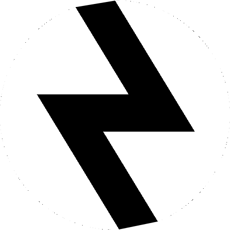

Classes
CONTROLEUR
Ils excellent à diviser les zones dangereuses pour permettre à leur équipe de remporter la victoire.
DUELLISTE
Ce sont des combattants indépendants. Leur équipe compte sur eux pour tuer un maximum d'adversaires et provoquer des combats.

INITIATEUR
Ils sont là pour aider leur équipe à entrer dans des zones contestées et à repousser les défenseurs.
SENTINELLE
Ce sont des experts de la défense qui verrouillent l'accès aux zones et surveillent les flancs tant en attaque qu'en défense.